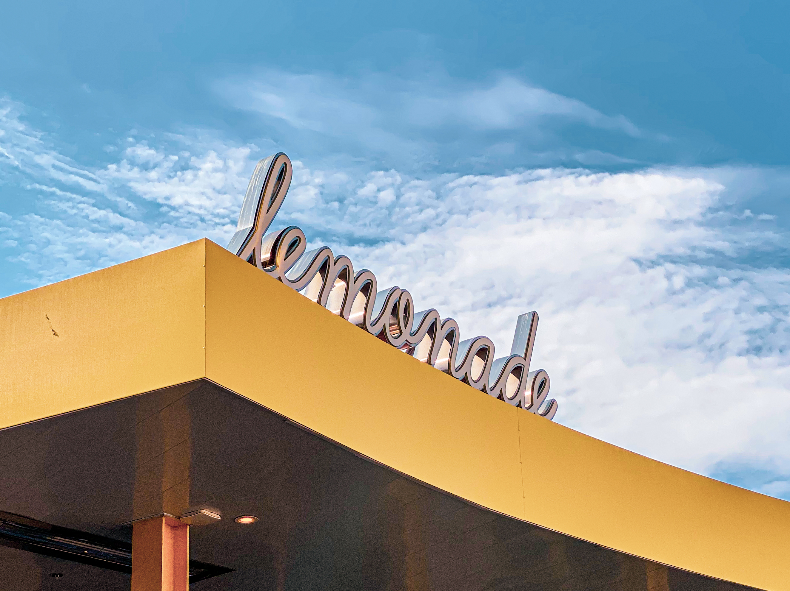
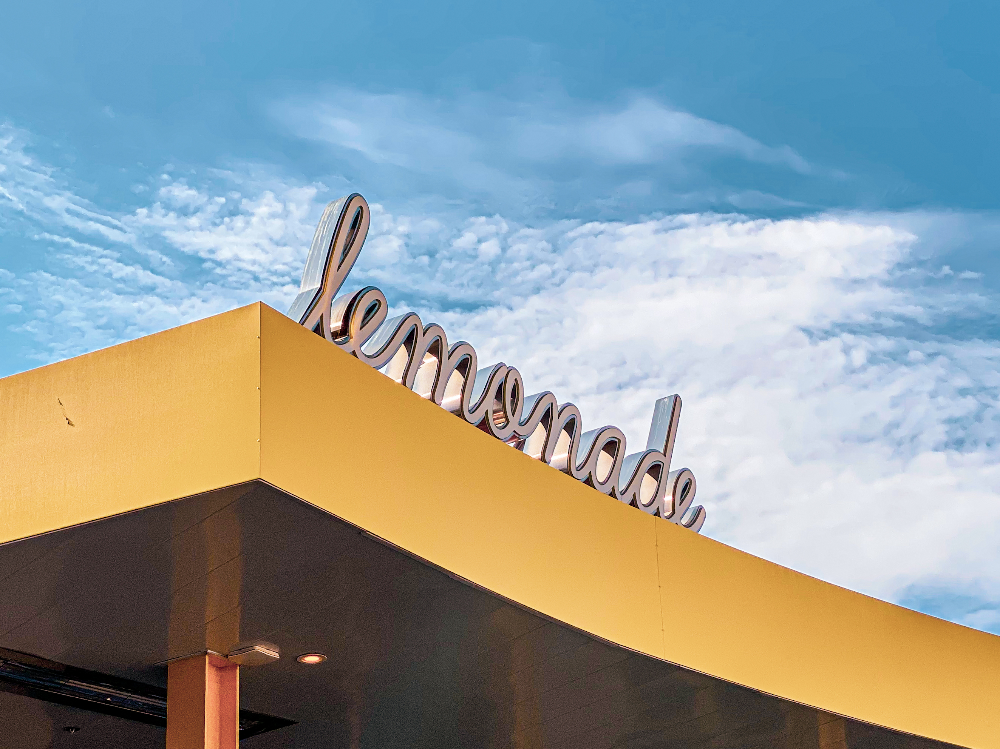

Curtis Lee
Born in Irvine, California, my childhood was spectacle of experiences between two regions across the world.
For most of my childhood to late teenage years, I studied internationally in Taipei, Taiwan, at the institution known as Taipei American School.
At this school, I went through a series of evolutions that led towards the passions and skillsets I developed and strengthened.
In my high school, one hobby paved the pathway to all the valued lessons, friends, and skills I have learned. Photography.
Starting with yearbook journalism club, I learned photography through constant trial and error; a strong desire for perfection followed my ambition.
Through a period of two years and hundreds of student life events, I learned all the fundamentals and responsbilities that came with a student photographer.
It should be noted that photography was not intuitive in my early years of practice. Towards the end of my second year, I applied and was chosen head photographer of the yearbook journalism class.
In the same school year, I attended the 2019 JEA/NSPA Journalism Convention in Anaheim, California, finding new and intriguing fellow students with similar objectives.
As a third year high school student, I earned my title as the Head Photographer, coordinating and collaborating with over 30 student photographers and school departments to cover countless school events.
During this year, photography became more than snapping a picture. With every trial and error, I chiselled my artistic sense, developing and implementing numerous unique techniques within my work.
Upon wrapping up my 3rd yearbook with the club, I applied and chosen as Co-Editor-in-Chief and Head Photographer for the yearbook journalism class.
The 4th and final yearbook with the group was the truest of any test I had ever had. As an Editor-in-Chief and Head Photographer for my organziation, my position or title was more than just "doing the job."
My passion for learning highly valued skillsets transfered over into my leadership. Alongside my team of 7 editors, we created an environment for many to explore and find their skillsets and artistic style.
Experience
Co-Editor-in-Chief and Head Photographer and Junior Photographer
• Taught basics of photography
• Taught basics of layout design
• Coordinated over 30 student photographers for school wide coverage
• Proficient in G suite
Education
UC Riverside
Portfolio



